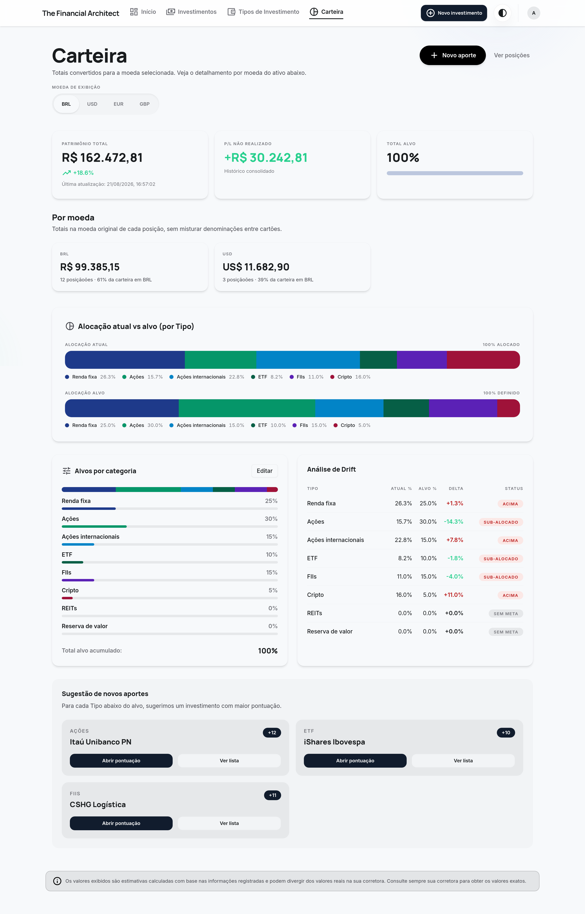
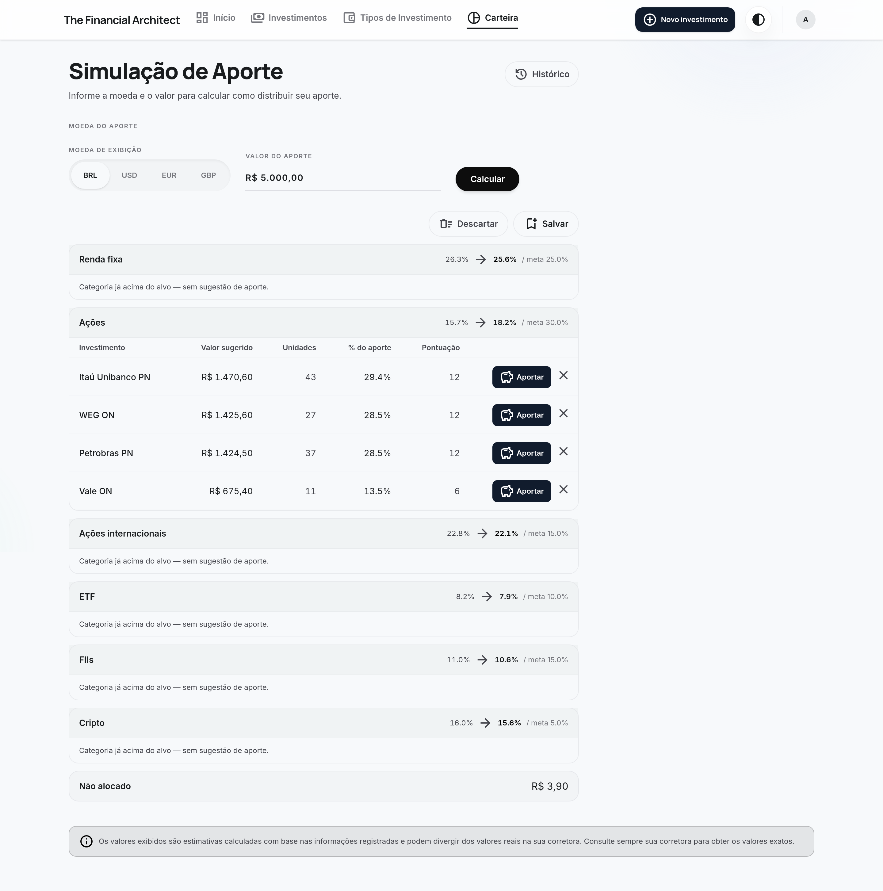
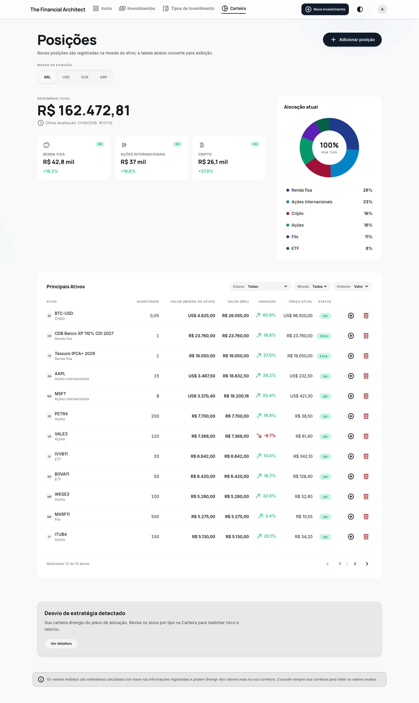
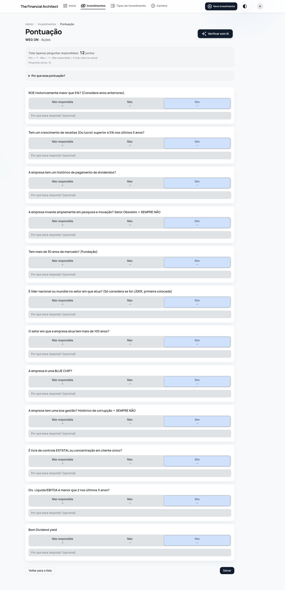
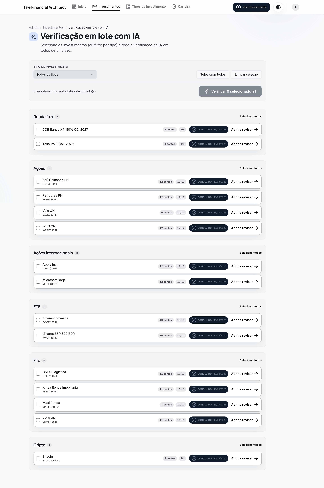
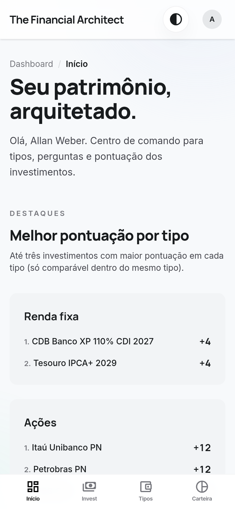
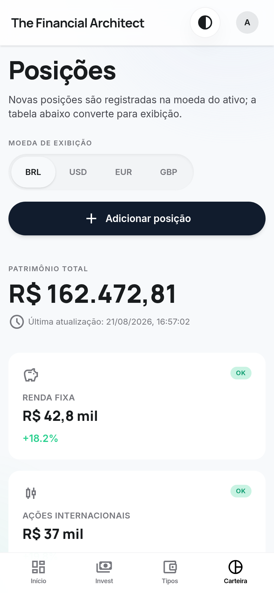
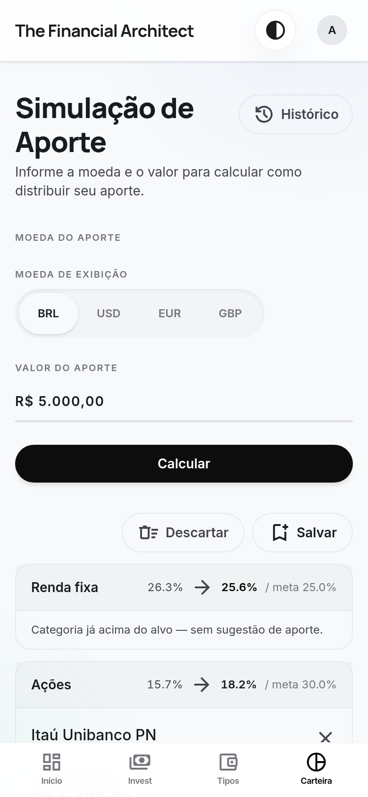
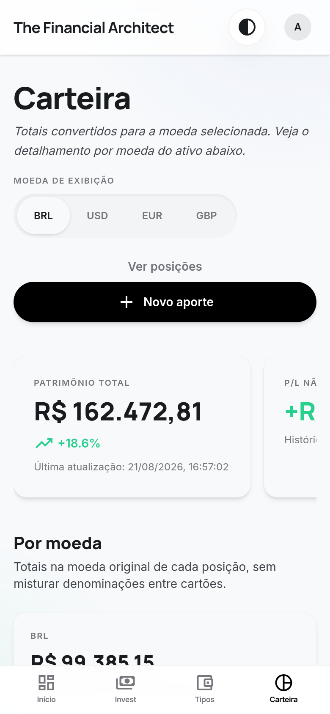

Portfolio allocation, done right
Seu patrimônio,
arquitetado.
The allocation command center that tells you exactly what to buy next — multi-currency valuation, target-driven rebalancing, investment scoring, and a built-in AI analyst, in one editorial dashboard.

The centerpiece · Simulação de Aporte
Turn "how much should I invest?" into a buy list.
Enter an amount; get a concrete, execute-today plan that pushes every asset class back toward its target — in whole tradable units, not fantasy fractions.

A real allocation algorithm, not a percentage split. It water-fills the categories furthest below target, rounds every buy to whole units, and redeploys the rounding residual across categories so almost nothing is wasted.
- Whole-unit reality — the suggested value is
units × price; no orders you can't place. - Water-filling — biggest allocation gaps get filled first, so the whole portfolio converges toward target.
- Residual redistribution — leftover money buys additional units elsewhere; fixed income absorbs the rest while under target.
- One click to apply — launch the position at the suggested quantity, and save the whole plan as a read-only snapshot.
Everything in one place
A command center for the long-term investor.
Targets, not vibes
See exactly how far you've drifted from the plan.
Set a target percentage per asset class and the app measures reality against it, continuously.
- Current vs projected vs target %, category by category.
- Drift table with over / under-allocated status at a glance.
- Total wealth and unrealized P/L, with a per-currency breakdown.
Live valuation
Every position, valued live and converted.
Stocks, FIIs, ETFs, international equity, crypto and fixed income — one table, one currency of your choosing.
- Positions held in BRL, USD and EUR, shown native and converted.
- Live price, variation vs average cost, and quote status per asset.
- Allocation donut and a "strategy drift detected" nudge.

Investment quality
Score what you own against your own checklist.
Each asset class has its own questionnaire; yes/no answers become a score that ranks holdings within their class.
- Editable question bank per category — 68 questions out of the box.
- Comparable score and ranking inside each asset class.
- Transparent "why this score" breakdown, question by question.

AI-assisted
Let Claude do the reading for you.
Bring your own Anthropic key and have AI answer the checklist from fundamentals — one asset, or a whole category in batch.
- Batch verification across an entire asset class.
- Review and apply AI suggestions before they count.
- Keys stored encrypted at rest (AES-256-GCM).

Fits in your pocket
Full feature parity on a phone.
A dedicated bottom navigation, single-column cards, and the same numbers — from a 390px screen up.

Dashboard

Holdings

Aporte

Allocation
Under the hood
Type-safe, from schema to pixel.
A modern full-stack app built for correctness — market data is a cache, not a dependency, and the allocation math is unit-tested.
Ready when you are
Build your portfolio with an architect's precision.
Set your targets, value everything live, and let the contribution engine tell you what to buy next.